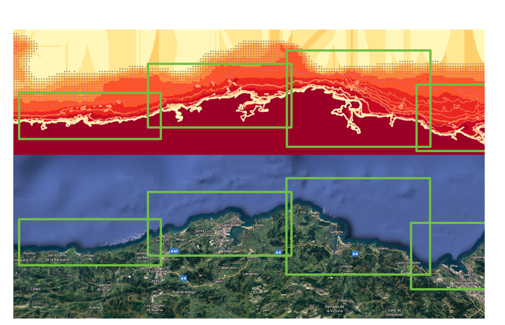
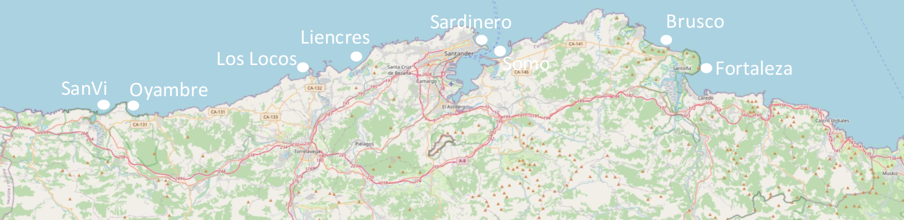

8. Forecast predictions in offshore and coastal points in Cantabria, Spain¶
please contact jtausiahoyal@gmail.com for more information
With this jupyter notebook, forecasts of the waves can be done in Cantabria, Spain just running all the cells below. Data is downloaded from the NOAA website and used for the local predictions. In case the methodology followed wanna be studied in detail, refer to the Forecast_CAN class in the repository, and to all the available notebooks as they explain step by step the procedure.
But briefly explained, this notebook download the data, save and plot it and then, reconstruct the predictions using RBF in coastal points using the previously propagated cases with SWAN (refer to the notebooks and the paper in the repo for more information).
This notebook focuses in Cantabria, a very interesting surfing region in the north of Spain. With this interactive notebook, you will be able to reconstruct the forecast wave climate in the next week and all around the coast of this region.
Because of the constraints on the hybrid method, the SWAN model has been executed in 4 different regions that are shown below:

# basic imports
import sys
import os
import os.path as op
import datetime
# dev library
sys.path.insert(0, op.join(os.path.abspath('')))
# Forecast module
from forecast_CAN import Forecast_CAN
date = datetime.date.today() # today or ex: '20200707'
date = date.strftime("%Y%m%d")
images_path = op.join(os.getcwd(), '..', 'images', 'forecast') # save images and GIF
location = (44.0, -4.0) # location to see the forecast
delta_lon = 0.6
delta_lat = 0.2
forecast = Forecast_CAN(date=date,
images_path=images_path,
location=location,
delta_lon=delta_lon,
delta_lat=delta_lat)
print(forecast.forecast)
Pulling the data from:
https://nomads.ncep.noaa.gov/dods/wave/mww3/20200907/multi_1.glo_30mext20200907_00z
The times with forecast go from 2020-09-08 00:00:00 to 2020-09-15 12:00:00
Generating images and GIF in "path"...
Number of images to plot from the total?
TOTAL: 61, To plot:
10
Plotting time: 2020-09-08 00:00:00...
Plotting time: 2020-09-08 18:00:00...
Plotting time: 2020-09-09 12:00:00...
Plotting time: 2020-09-10 06:00:00...
Plotting time: 2020-09-11 00:00:00...
Plotting time: 2020-09-11 18:00:00...
Plotting time: 2020-09-12 12:00:00...
Plotting time: 2020-09-13 06:00:00...
Plotting time: 2020-09-14 00:00:00...
Plotting time: 2020-09-14 18:00:00...
Plotting time: 2020-09-15 12:00:00...
GIF generated and saved!!
<class 'netCDF4._netCDF4.Dataset'>
root group (NETCDF3_CLASSIC data model, file format DAP2):
title: Multi-grid wave model: Global 30 arc-min grid from 00Z07sep2020 downloaded Sep 07 04:24 UTC
Conventions: COARDS
GrADS
dataType: Grid
history: Mon Sep 07 08:09:42 UTC 2020 : imported by GrADS Data Server 2.0
dimensions(sizes): lat(336), lon(720), time(61)
variables(dimensions): float64 time(time), float64 lat(lat), float64 lon(lon), float32 dirpwsfc(time,lat,lon), float32 htsgwsfc(time,lat,lon), float32 perpwsfc(time,lat,lon), float32 swdir_1(time,lat,lon), float32 swdir_2(time,lat,lon), float32 swell_1(time,lat,lon), float32 swell_2(time,lat,lon), float32 swper_1(time,lat,lon), float32 swper_2(time,lat,lon), float32 ugrdsfc(time,lat,lon), float32 vgrdsfc(time,lat,lon), float32 wdirsfc(time,lat,lon), float32 windsfc(time,lat,lon), float32 wvdirsfc(time,lat,lon), float32 wvhgtsfc(time,lat,lon), float32 wvpersfc(time,lat,lon)
groups:
forecast_data = forecast.plot_region(zoom=8)
Location in (44.0, -4.0)!!
These are the coordinates in the selected region:
[44.]
[355.5 356. 356.5]
If selected coordinates are not desired,
please rerun the notebook with the desired parameters!!
Saving the data in the shown region...
<xarray.Dataset>
Dimensions: (lat: 1, lon: 3, time: 61)
Coordinates:
* time (time) datetime64[ns] 2020-09-08 ... 2020-09-15T12:00:00
* lat (lat) float64 44.0
* lon (lon) float64 355.5 356.0 356.5
Data variables:
Hsea (time, lat, lon) float32 0.62 0.56 9.999e+20 ... 9.999e+20 0.93
Tpsea (time, lat, lon) float32 4.36 4.27 9.999e+20 ... 9.999e+20 4.85
Dirsea (time, lat, lon) float32 28.599998 29.679998 ... 133.31999
Hswell1 (time, lat, lon) float32 1.26 1.27 1.38 ... 1.36 1.35 1.3199999
Tpswell1 (time, lat, lon) float32 9.83 9.91 10.0199995 ... 11.8 11.88
Dirswell1 (time, lat, lon) float32 316.27 315.6 ... 315.0 314.41998
Hswell2 (time, lat, lon) float32 9.999e+20 9.999e+20 ... 0.68 9.999e+20
Tpswell2 (time, lat, lon) float32 9.999e+20 9.999e+20 ... 4.68 9.999e+20
Dirswell2 (time, lat, lon) float32 9.999e+20 9.999e+20 ... 9.999e+20
Hs (time, lat, lon) float32 1.4 1.39 1.38 1.31 ... 1.49 1.51 1.61
Tp (time, lat, lon) float32 9.83 9.91 10.0199995 ... 11.8 11.88
Dir (time, lat, lon) float32 313.27 311.88 ... 315.16 314.75998
Uwind (time, lat, lon) float32 -3.22 -2.09 -0.79999995 ... 0.78 -4.11
Vwind (time, lat, lon) float32 -3.84 -3.77 -3.78 ... 1.5699999 5.5
WindSpeed (time, lat, lon) float32 5.0099998 4.31 3.86 ... 1.75 6.8599997
DirWind (time, lat, lon) float32 40.04 29.07 12.03 ... 206.53 143.22
DONE!!
In this plot below, the principal beaches of Cantabria are shown and below this cell, the coordinates of the beaches are also shown:

p_data_swan = op.join(os.getcwd(), '..', 'data', 'projects-swan')
# -------------- EDIT THIS PART --------------------------------------------- #
info = {
'name' : ['SVI', 'SDR', 'BRS'], # used name in the SWAN section
'resolution' : [str(0.0024), str(0.0024), str(0.0024)], # used resolution in the SWAN section
'num_cases' : [str(300), str(300), str(300)] # num cases run in SWAN
}
# --------------------------------------------------------------------------- #
# Example coordinates for the forecast reconstruction:
# SanVi 43.41, -4.38
# Oyambre 43.41, -4.31
# Los Locos 43.44, -4.06
# Liencres 43.46, -3.97
# La Vaca 43.51, -3.83
# Sardinero 43.48, -3.76
# Somo 43.47, -3.74
# Brusco 43.48, -3.48
# Berria 43.48, -3.45
# Laredo 43.42, -3.42
# Sona-Ori 43.42, -3.31
forecasts_list = forecast.forecast_reconstruction(p_data_swan=p_data_swan,
info=info,
forecast_data=forecast_data)
Select the number of points to reconstruct in GRID 1 :
2
Select the desired point to reconstruct in GRID 1 as it is given in Google Maps:
Latitude location to obtain the forecast reconstruction: 43.41
Longitude location to obtain the forecast reconstruction:
-4.38
Forecast in the selected region will be calculated!!
Performing RFB reconstruction...
ix_scalar: 0, optimization: 5.75 | interpolation: 0.01
ix_scalar: 1, optimization: 15.76 | interpolation: 0.01
ix_scalar: 2, optimization: 7.44 | interpolation: 0.00
ix_scalar: 4, optimization: 12.42 | interpolation: 0.00
ix_directional: 3, optimization: 11.27 | interpolation: 0.01
ix_scalar: 0, optimization: 5.38 | interpolation: 0.00
ix_scalar: 1, optimization: 12.54 | interpolation: 0.00
ix_scalar: 2, optimization: 12.42 | interpolation: 0.00
ix_scalar: 4, optimization: 6.86 | interpolation: 0.00
ix_directional: 3, optimization: 8.55 | interpolation: 0.02
ix_scalar: 0, optimization: 4.98 | interpolation: 0.00
ix_scalar: 1, optimization: 12.66 | interpolation: 0.00
ix_scalar: 2, optimization: 12.50 | interpolation: 0.00
ix_scalar: 4, optimization: 6.79 | interpolation: 0.00
ix_directional: 3, optimization: 8.62 | interpolation: 0.01
Saving the data in list...
SAVED!!!
Select the desired point to reconstruct in GRID 1 as it is given in Google Maps:
Latitude location to obtain the forecast reconstruction: 43.41
Longitude location to obtain the forecast reconstruction:
-4.31
Forecast in the selected region will be calculated!!
Performing RFB reconstruction...
ix_scalar: 0, optimization: 5.03 | interpolation: 0.01
ix_scalar: 1, optimization: 18.48 | interpolation: 0.00
ix_scalar: 2, optimization: 5.96 | interpolation: 0.01
ix_scalar: 4, optimization: 6.93 | interpolation: 0.00
ix_directional: 3, optimization: 11.22 | interpolation: 0.01
ix_scalar: 0, optimization: 4.66 | interpolation: 0.00
ix_scalar: 1, optimization: 12.88 | interpolation: 0.00
ix_scalar: 2, optimization: 12.91 | interpolation: 0.00
ix_scalar: 4, optimization: 5.21 | interpolation: 0.00
ix_directional: 3, optimization: 9.83 | interpolation: 0.01
ix_scalar: 0, optimization: 7.52 | interpolation: 0.01
ix_scalar: 1, optimization: 18.17 | interpolation: 0.00
ix_scalar: 2, optimization: 12.80 | interpolation: 0.01
ix_scalar: 4, optimization: 5.60 | interpolation: 0.00
ix_directional: 3, optimization: 10.47 | interpolation: 0.01
Saving the data in list...
SAVED!!!
Select the number of points to reconstruct in GRID 2 :
5
Select the desired point to reconstruct in GRID 2 as it is given in Google Maps:
Latitude location to obtain the forecast reconstruction: 43.44
Longitude location to obtain the forecast reconstruction:
-4.06
Forecast in the selected region will be calculated!!
Performing RFB reconstruction...
ix_scalar: 0, optimization: 4.84 | interpolation: 0.00
ix_scalar: 1, optimization: 6.79 | interpolation: 0.00
ix_scalar: 2, optimization: 4.88 | interpolation: 0.00
ix_scalar: 4, optimization: 5.47 | interpolation: 0.00
ix_directional: 3, optimization: 9.32 | interpolation: 0.01
ix_scalar: 0, optimization: 4.19 | interpolation: 0.00
ix_scalar: 1, optimization: 13.95 | interpolation: 0.00
ix_scalar: 2, optimization: 8.93 | interpolation: 0.01
ix_scalar: 4, optimization: 8.78 | interpolation: 0.00
ix_directional: 3, optimization: 12.06 | interpolation: 0.01
ix_scalar: 0, optimization: 5.26 | interpolation: 0.01
ix_scalar: 1, optimization: 17.20 | interpolation: 0.00
ix_scalar: 2, optimization: 8.88 | interpolation: 0.00
ix_scalar: 4, optimization: 7.50 | interpolation: 0.00
ix_directional: 3, optimization: 13.70 | interpolation: 0.01
Saving the data in list...
SAVED!!!
Select the desired point to reconstruct in GRID 2 as it is given in Google Maps:
Latitude location to obtain the forecast reconstruction: 43.46
Longitude location to obtain the forecast reconstruction:
-3.97
Forecast in the selected region will be calculated!!
Performing RFB reconstruction...
ix_scalar: 0, optimization: 6.62 | interpolation: 0.01
ix_scalar: 1, optimization: 6.89 | interpolation: 0.00
ix_scalar: 2, optimization: 5.28 | interpolation: 0.00
ix_scalar: 4, optimization: 7.82 | interpolation: 0.01
ix_directional: 3, optimization: 16.68 | interpolation: 0.01
ix_scalar: 0, optimization: 5.68 | interpolation: 0.00
ix_scalar: 1, optimization: 6.60 | interpolation: 0.01
ix_scalar: 2, optimization: 20.12 | interpolation: 0.01
ix_scalar: 4, optimization: 15.53 | interpolation: 0.01
ix_directional: 3, optimization: 19.01 | interpolation: 0.01
ix_scalar: 0, optimization: 8.42 | interpolation: 0.01
ix_scalar: 1, optimization: 13.37 | interpolation: 0.01
ix_scalar: 2, optimization: 21.75 | interpolation: 0.00
ix_scalar: 4, optimization: 12.42 | interpolation: 0.00
ix_directional: 3, optimization: 13.02 | interpolation: 0.01
Saving the data in list...
SAVED!!!
Select the desired point to reconstruct in GRID 2 as it is given in Google Maps:
Latitude location to obtain the forecast reconstruction: 43.51
Longitude location to obtain the forecast reconstruction:
-3.83
Forecast in the selected region will be calculated!!
Performing RFB reconstruction...
ix_scalar: 0, optimization: 9.30 | interpolation: 0.01
ix_scalar: 1, optimization: 22.60 | interpolation: 0.01
ix_scalar: 2, optimization: 9.04 | interpolation: 0.01
ix_scalar: 4, optimization: 9.54 | interpolation: 0.01
ix_directional: 3, optimization: 16.56 | interpolation: 0.02
ix_scalar: 0, optimization: 9.00 | interpolation: 0.01
ix_scalar: 1, optimization: 21.69 | interpolation: 0.01
ix_scalar: 2, optimization: 22.05 | interpolation: 0.01
ix_scalar: 4, optimization: 10.03 | interpolation: 0.01
ix_directional: 3, optimization: 19.42 | interpolation: 0.02
ix_scalar: 0, optimization: 8.99 | interpolation: 0.00
ix_scalar: 1, optimization: 21.98 | interpolation: 0.01
ix_scalar: 2, optimization: 22.80 | interpolation: 0.00
ix_scalar: 4, optimization: 8.65 | interpolation: 0.01
ix_directional: 3, optimization: 13.23 | interpolation: 0.01
Saving the data in list...
SAVED!!!
Select the desired point to reconstruct in GRID 2 as it is given in Google Maps:
Latitude location to obtain the forecast reconstruction: 43.48
Longitude location to obtain the forecast reconstruction:
-3.76
Forecast in the selected region will be calculated!!
Performing RFB reconstruction...
ix_scalar: 0, optimization: 6.53 | interpolation: 0.01
ix_scalar: 1, optimization: 23.14 | interpolation: 0.01
ix_scalar: 2, optimization: 7.41 | interpolation: 0.01
ix_scalar: 4, optimization: 8.94 | interpolation: 0.01
ix_directional: 3, optimization: 18.02 | interpolation: 0.01
ix_scalar: 0, optimization: 8.00 | interpolation: 0.01
ix_scalar: 1, optimization: 22.78 | interpolation: 0.01
ix_scalar: 2, optimization: 20.45 | interpolation: 0.00
ix_scalar: 4, optimization: 7.58 | interpolation: 0.01
ix_directional: 3, optimization: 14.83 | interpolation: 0.02
ix_scalar: 0, optimization: 8.28 | interpolation: 0.01
ix_scalar: 1, optimization: 17.66 | interpolation: 0.01
ix_scalar: 2, optimization: 12.68 | interpolation: 0.00
ix_scalar: 4, optimization: 9.56 | interpolation: 0.01
ix_directional: 3, optimization: 16.11 | interpolation: 0.01
Saving the data in list...
SAVED!!!
Select the desired point to reconstruct in GRID 2 as it is given in Google Maps:
Latitude location to obtain the forecast reconstruction: 43.47
Longitude location to obtain the forecast reconstruction:
-3.74
Forecast in the selected region will be calculated!!
Performing RFB reconstruction...
ix_scalar: 0, optimization: 5.49 | interpolation: 0.00
ix_scalar: 1, optimization: 10.78 | interpolation: 0.01
ix_scalar: 2, optimization: 8.18 | interpolation: 0.01
ix_scalar: 4, optimization: 12.32 | interpolation: 0.01
ix_directional: 3, optimization: 21.60 | interpolation: 0.02
ix_scalar: 0, optimization: 8.85 | interpolation: 0.01
ix_scalar: 1, optimization: 28.52 | interpolation: 0.01
ix_scalar: 2, optimization: 15.32 | interpolation: 0.01
ix_scalar: 4, optimization: 9.94 | interpolation: 0.01
ix_directional: 3, optimization: 16.33 | interpolation: 0.02
ix_scalar: 0, optimization: 7.21 | interpolation: 0.00
ix_scalar: 1, optimization: 21.21 | interpolation: 0.01
ix_scalar: 2, optimization: 15.32 | interpolation: 0.01
ix_scalar: 4, optimization: 11.61 | interpolation: 0.01
ix_directional: 3, optimization: 16.15 | interpolation: 0.01
Saving the data in list...
SAVED!!!
Select the number of points to reconstruct in GRID 3 :
4
Select the desired point to reconstruct in GRID 3 as it is given in Google Maps:
Latitude location to obtain the forecast reconstruction: 43.48
Longitude location to obtain the forecast reconstruction:
-3.48
Forecast in the selected region will be calculated!!
Performing RFB reconstruction...
ix_scalar: 0, optimization: 9.50 | interpolation: 0.00
ix_scalar: 1, optimization: 11.88 | interpolation: 0.01
ix_scalar: 2, optimization: 5.14 | interpolation: 0.00
ix_scalar: 4, optimization: 5.97 | interpolation: 0.00
ix_directional: 3, optimization: 13.18 | interpolation: 0.01
ix_scalar: 0, optimization: 7.74 | interpolation: 0.00
ix_scalar: 1, optimization: 7.71 | interpolation: 0.00
ix_scalar: 2, optimization: 8.83 | interpolation: 0.00
ix_scalar: 4, optimization: 5.70 | interpolation: 0.00
ix_directional: 3, optimization: 13.72 | interpolation: 0.01
ix_scalar: 0, optimization: 8.32 | interpolation: 0.00
ix_scalar: 1, optimization: 11.80 | interpolation: 0.01
ix_scalar: 2, optimization: 12.18 | interpolation: 0.01
ix_scalar: 4, optimization: 6.26 | interpolation: 0.01
ix_directional: 3, optimization: 12.60 | interpolation: 0.02
Saving the data in list...
SAVED!!!
Select the desired point to reconstruct in GRID 3 as it is given in Google Maps:
Latitude location to obtain the forecast reconstruction: 43.48
Longitude location to obtain the forecast reconstruction:
-3.45
Forecast in the selected region will be calculated!!
Performing RFB reconstruction...
ix_scalar: 0, optimization: 7.72 | interpolation: 0.00
ix_scalar: 1, optimization: 23.41 | interpolation: 0.01
ix_scalar: 2, optimization: 9.24 | interpolation: 0.01
ix_scalar: 4, optimization: 11.01 | interpolation: 0.00
ix_directional: 3, optimization: 12.94 | interpolation: 0.01
ix_scalar: 0, optimization: 6.40 | interpolation: 0.01
ix_scalar: 1, optimization: 15.62 | interpolation: 0.01
ix_scalar: 2, optimization: 21.55 | interpolation: 0.01
ix_scalar: 4, optimization: 9.26 | interpolation: 0.01
ix_directional: 3, optimization: 17.84 | interpolation: 0.01
ix_scalar: 0, optimization: 7.42 | interpolation: 0.00
ix_scalar: 1, optimization: 18.50 | interpolation: 0.01
ix_scalar: 2, optimization: 15.70 | interpolation: 0.00
ix_scalar: 4, optimization: 6.67 | interpolation: 0.00
ix_directional: 3, optimization: 11.92 | interpolation: 0.01
Saving the data in list...
SAVED!!!
Select the desired point to reconstruct in GRID 3 as it is given in Google Maps:
Latitude location to obtain the forecast reconstruction: 43.42
Longitude location to obtain the forecast reconstruction:
-3.42
Forecast in the selected region will be calculated!!
Performing RFB reconstruction...
ix_scalar: 0, optimization: 5.10 | interpolation: 0.00
ix_scalar: 1, optimization: 6.25 | interpolation: 0.01
ix_scalar: 2, optimization: 6.44 | interpolation: 0.00
ix_scalar: 4, optimization: 5.66 | interpolation: 0.00
ix_directional: 3, optimization: 11.37 | interpolation: 0.01
ix_scalar: 0, optimization: 4.93 | interpolation: 0.00
ix_scalar: 1, optimization: 9.04 | interpolation: 0.00
ix_scalar: 2, optimization: 9.36 | interpolation: 0.00
ix_scalar: 4, optimization: 6.91 | interpolation: 0.01
ix_directional: 3, optimization: 8.45 | interpolation: 0.01
ix_scalar: 0, optimization: 5.02 | interpolation: 0.00
ix_scalar: 1, optimization: 7.82 | interpolation: 0.00
ix_scalar: 2, optimization: 6.35 | interpolation: 0.01
ix_scalar: 4, optimization: 7.33 | interpolation: 0.01
ix_directional: 3, optimization: 8.62 | interpolation: 0.01
Saving the data in list...
SAVED!!!
Select the desired point to reconstruct in GRID 3 as it is given in Google Maps:
Latitude location to obtain the forecast reconstruction: 43.42
Longitude location to obtain the forecast reconstruction:
-3.31
Forecast in the selected region will be calculated!!
Performing RFB reconstruction...
ix_scalar: 0, optimization: 4.55 | interpolation: 0.00
ix_scalar: 1, optimization: 11.86 | interpolation: 0.00
ix_scalar: 2, optimization: 5.68 | interpolation: 0.00
ix_scalar: 4, optimization: 4.76 | interpolation: 0.00
ix_directional: 3, optimization: 8.46 | interpolation: 0.01
ix_scalar: 0, optimization: 3.77 | interpolation: 0.00
ix_scalar: 1, optimization: 6.23 | interpolation: 0.00
ix_scalar: 2, optimization: 11.46 | interpolation: 0.00
ix_scalar: 4, optimization: 5.96 | interpolation: 0.00
ix_directional: 3, optimization: 8.89 | interpolation: 0.01
ix_scalar: 0, optimization: 3.87 | interpolation: 0.00
ix_scalar: 1, optimization: 5.97 | interpolation: 0.00
ix_scalar: 2, optimization: 11.59 | interpolation: 0.00
ix_scalar: 4, optimization: 5.73 | interpolation: 0.00
ix_directional: 3, optimization: 9.16 | interpolation: 0.01
Saving the data in list...
SAVED!!!
forecast.plot_results(forecasts_list=forecasts_list)
Number of images to plot from the total?
TOTAL: 61, To plot:
20
Plotting time: 2020-09-08 00:00:00...
Plotting time: 2020-09-08 09:00:00...
Plotting time: 2020-09-08 18:00:00...
Plotting time: 2020-09-09 03:00:00...
Plotting time: 2020-09-09 12:00:00...
Plotting time: 2020-09-09 21:00:00...
Plotting time: 2020-09-10 06:00:00...
Plotting time: 2020-09-10 15:00:00...
Plotting time: 2020-09-11 00:00:00...
Plotting time: 2020-09-11 09:00:00...
Plotting time: 2020-09-11 18:00:00...
Plotting time: 2020-09-12 03:00:00...
Plotting time: 2020-09-12 12:00:00...
Plotting time: 2020-09-12 21:00:00...
Plotting time: 2020-09-13 06:00:00...
Plotting time: 2020-09-13 15:00:00...
Plotting time: 2020-09-14 00:00:00...
Plotting time: 2020-09-14 09:00:00...
Plotting time: 2020-09-14 18:00:00...
Plotting time: 2020-09-15 03:00:00...
Plotting time: 2020-09-15 12:00:00...
GIF generated and saved!!
from IPython.display import Image
Image('../images/forecast/forecast_CANgit.gif',embed=True)
<IPython.core.display.Image object>